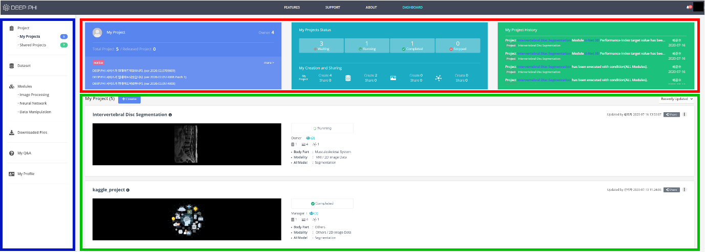

2. 화면 구성
2-2. 프로젝트 대시보드

로그인 후 접속되는 첫 화면은 프로젝트 Dashboard입니다. 프로젝트의 다양한 이력들과 기능들을 확인, 관리할 수 있으며 공지사항과 Q&A 결과를 확인할 수 있습니다.
- 파란색 영역은 Dashboard에서 확인할 수 있는 메뉴들로 구성되어 있습니다. 사용자의 프로젝트 이력, 데이터셋의 이력, 사용할 수 있는 모듈의 종류와 Q&A 결과와 공지사항을 확인할 수 있습니다.
- 붉은색 영역은 최근 실행한 프로젝트의 상태와 이력, 현재 계정의 리소스 사용 현황 등을 확인할 수 있습니다.
- 녹색 영역은 생성한 사용자의 개인 프로젝트들의 목록과 내용을 확인할 수 있습니다. 또한 Create 버튼을 눌러 신규 프로젝트를 생성할 수 있습니다.